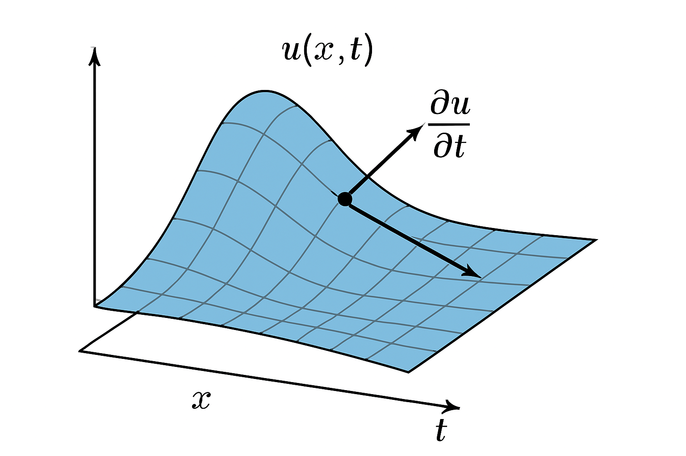
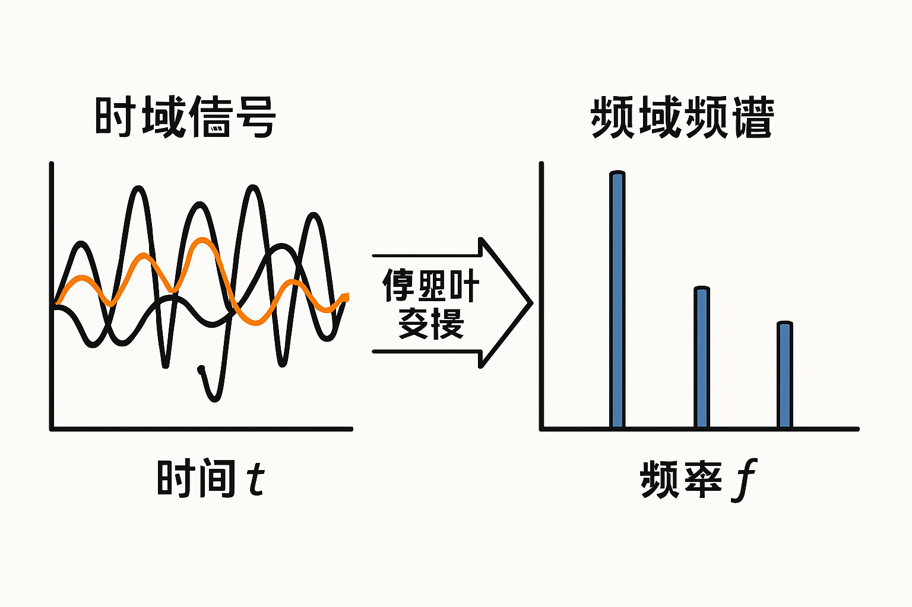
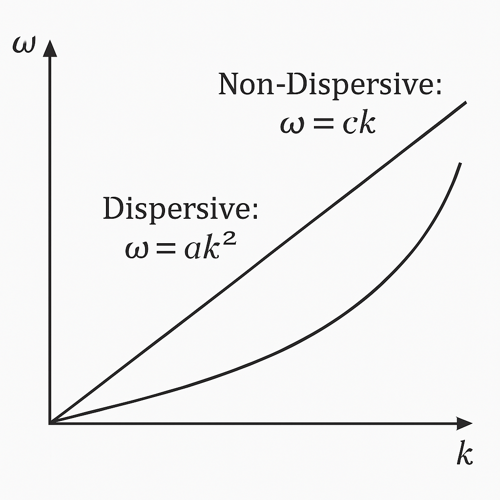

第1章：引言与预备知识
1.1 学习本教程的读者对象与目标
欢迎来到 Ostrovsky 方程线性色散分析学习网站！本教程旨在为对波动现象、非线性偏微分方程及其分析方法感兴趣的本科生、研究生以及非动力系统方向的研究人员提供一个清晰、系统的学习资源。无论您是初次接触相关领域，还是希望对 Ostrovsky 方程的线性色散特性有更深入的理解，本教程都将力图满足您的需求。
读者对象：
- 物理、数学、工程等相关专业的本科生：希望了解非线性波动方程的基本概念和分析方法，特别是色散关系在波动理论中的作用。
- 非动力系统或流体力学方向的研究生：需要快速掌握 Ostrovsky 方程的背景知识和线性分析技巧，为后续的深入研究（如非线性分析、数值模拟）打下基础。
- 对数学物理方法感兴趣的自学者：希望通过一个具体的方程学习偏微分方程的分析思路和技巧。
学习目标：
通过学习本教程，您将能够：
- 理解偏微分方程和傅里叶分析的基本概念及其在波动问题中的应用。
- 了解 Ostrovsky 方程的物理背景、数学形式及其在描述特定物理现象（如海洋内波、旋转流体中的波动）中的重要性。
- 掌握对 Ostrovsky 方程进行线性化处理的方法和原因。
- 独立推导 Ostrovsky 方程的线性色散关系。
- 理解色散关系的物理意义，包括相速度、群速度的概念，并能分析不同参数对色散特性的影响。
- 能够解读和分析典型的色散关系图。
- 了解线性色散分析在具体物理问题中的应用实例。
本教程将采用循序渐进的方式，从基础知识回顾开始，逐步深入到 Ostrovsky 方程的线性色散分析。我们将力求数学表达的严谨性，同时辅以生动的例子和直观的插图，帮助您更好地理解抽象的数学概念和物理过程。希望本教程能成为您探索非线性波动世界的一把钥匙。
1.2 偏微分方程 (PDE) 基础回顾
在深入探讨 Ostrovsky 方程之前，我们首先需要回顾一些偏微分方程 (Partial Differential Equations, PDEs) 的基础知识。PDEs 是描述自然界和工程技术中各种现象的基本数学工具，它们涉及未知函数及其关于多个自变量的偏导数。
1.2.1 什么是偏微分方程？
简单来说，一个偏微分方程是包含未知多元函数及其偏导数的方程。与常微分方程 (ODEs) 不同，ODEs 中的未知函数只依赖于单个自变量。例如，一个描述物体在空间 (x, y, z) 和时间 t 分布的温度 U(x, y, z, t) 可能由一个 PDE 来描述。
定义：一个涉及一个或多个自变量以及一个未知函数（依赖于这些自变量）和该未知函数的偏导数的方程称为偏微分方程。
例子：热传导方程是一个典型的 PDE：
这里，u(x,y,z,t) 是温度，α 是热扩散系数。
1.2.2 线性与非线性偏微分方程
PDEs 可以根据其性质进行分类，其中一个重要的分类标准是线性与非线性。
- 线性 PDE：如果一个 PDE 对于未知函数及其所有偏导数都是线性的，那么它就是线性的。这意味着未知函数及其导数的幂次都为1，且不存在它们之间的乘积项。线性 PDE 的一个重要特性是解的叠加原理成立，即如果 u₁ 和 u₂ 分别是某个线性 PDE 的解，那么它们的线性组合 c₁u₁ + c₂u₂ (其中 c₁, c₂ 是常数) 也是该方程的解。
- 例子：波动方程 ∂²u/∂t² = c² ∂²u/∂x²是一个线性 PDE。
- 例子：波动方程
- 非线性 PDE：如果一个 PDE 不是线性的，那么它就是非线性的。非线性项可以表现为未知函数自身的幂（如 u²）、其导数的幂（如 (∂u/∂x)²），或者函数与其导数的乘积（如 u ∂u/∂x）。非线性 PDE 通常比线性 PDE 更难求解，且解的行为也更为复杂和丰富，可能出现孤立波、激波、混沌等现象。叠加原理通常不适用于非线性 PDE。
- 例子：Korteweg-de Vries (KdV) 方程 ∂u/∂t + 6u ∂u/∂x + ∂³u/∂x³ = 0是一个著名的非线性 PDE，它包含非线性项 6u ∂u/∂x。Ostrovsky 方程也是一个非线性 PDE。
- 例子：Korteweg-de Vries (KdV) 方程
理解线性和非线性的区别对于选择合适的分析方法至关重要。本教程将要讨论的 Ostrovsky 方程就是一个非线性 PDE，而线性色散分析则是研究其波动特性的一个初步但非常重要的方法，它涉及到将非线性方程在特定条件下近似为线性方程进行分析。
1.2.3 常见的偏微分方程举例
除了上面提到的热传导方程和波动方程，还有许多其他重要的 PDEs 在科学和工程中扮演着核心角色：
- 拉普拉斯方程 (Laplace's Equation)：∇²u = ∂²u/∂x² + ∂²u/∂y² + ∂²u/∂z² = 0。描述稳态现象，如静电场、稳态温度分布、不可压缩无旋流体的速度势。
- 泊松方程 (Poisson's Equation)：∇²u = f(x,y,z)。是拉普拉斯方程的推广，描述有源场的稳态分布。
- 亥姆霍兹方程 (Helmholtz Equation)：∇²u + k²u = 0。常出现在波动问题的时间傅里叶变换中，如声波、电磁波的传播。
- 薛定谔方程 (Schrödinger Equation)：在量子力学中描述微观粒子行为的基本方程，其形式也依赖于具体体系，但通常是线性的（对于波函数）。
- 纳维-斯托克斯方程 (Navier-Stokes Equations)：描述粘性流体运动的一组非线性 PDEs，是流体力学的核心方程。
这些方程展示了 PDEs 在描述多样化物理过程中的强大能力。Ostrovsky 方程属于非线性演化方程的范畴，这类方程通常用来描述波在非线性介质中的传播和演化。
1.2.4 插图规划：PDE概念示意图

插图1: PDE概念示意图。一个概念图，展示一个函数 u(x,t) 的曲面，并标出其对 x 和 t 的偏导数（例如，切线的斜率），以直观解释 PDE 如何关联函数及其变化率。
1.3 傅里叶分析基础回顾
傅里叶分析是研究偏微分方程，特别是波动方程和色散现象的强大工具。它允许我们将复杂的函数分解为简单的正弦和余弦波的叠加，从而简化分析过程。
1.3.1 傅里叶级数与傅里叶变换
- 傅里叶级数 (Fourier Series)：对于定义在有限区间上的周期函数 f(x)，如果满足一定条件（如狄利克雷条件），它可以表示为一个由正弦和余弦函数组成的无穷级数：
f(x) = a₀/2 + Σ[n=1 to ∞] (aₙ cos(nωx) + bₙ sin(nωx))其中，ω = 2π/T (T 是周期)，系数 a₀, aₙ, bₙ 可以通过积分计算得到。傅里叶级数告诉我们，任何“行为良好”的周期信号都可以看作是不同频率谐波的叠加。
- 傅里叶变换 (Fourier Transform)：傅里叶变换将傅里叶级数的思想推广到非周期函数。一个函数 f(x) 的傅里叶变换 F(k) 定义为：
F(k) = ∫[-∞ to ∞] f(x) e-ikx dx而其逆变换为：f(x) = (1/2π) ∫[-∞ to ∞] F(k) eikx dk这里，k 通常表示波数（与空间频率相关）。F(k) 描述了函数 f(x) 中各个频率（或波数）分量的振幅和相位。傅里叶变换在信号处理、图像分析和 PDE 求解中都有广泛应用。对于时间信号 f(t)，其傅里叶变换 F(ω) 通常表示为：F(ω) = ∫[-∞ to ∞] f(t) e-iωt dt其中 ω 是角频率。
在 PDE 的分析中，傅里叶变换常用于将 PDE 从时空域转换到频域（或波数域）。在线性 PDE 中，这种转换往往可以将偏微分运算转化为代数运算，从而简化求解过程。
1.3.2 色散关系的基本概念
色散 (Dispersion) 是指波的传播速度依赖于其频率或波长的现象。当一个包含多种频率成分的波包在色散介质中传播时，不同频率的波分量会以不同的速度传播，导致波包在传播过程中逐渐展宽或变形。
色散关系 (Dispersion Relation) 是一个数学表达式，它描述了波的角频率 ω 与其波数 k 之间的关系，即 ω = ω(k)。这个关系完全由介质的性质和控制波动的方程决定。
- 非色散波：如果波的相速度 v_p = ω/k 是一个常数，与频率或波数无关，则称这种波为非色散波。此时，ω(k) = c k，其中 c 是常数。在这种情况下，所有频率分量的传播速度相同，波包在传播过程中保持其形状不变（不考虑衰减等其他因素）。例如，理想弦上的小振幅横波或真空中的电磁波是近似非色散的。
- 色散波：如果相速度 v_p 依赖于 k (或 ω)，即 ω(k) 不是 k 的简单线性函数，则波是色散的。这意味着不同频率的波分量以不同的速度传播。
色散关系 ω(k) 是理解波动行为的关键。从色散关系中，我们可以得到：
- 相速度 (Phase Velocity) v_p(k) = ω(k)/k：单个频率分量的波峰或波谷的传播速度。
- 群速度 (Group Velocity) v_g(k) = dω(k)/dk：波包（即能量或信息）的传播速度。对于窄带波包，群速度描述了整个波包的包络的传播速度。
如果 v_p 和 v_g 不同，或者它们都依赖于 k，那么介质就是色散的。Ostrovsky 方程描述的波通常是色散的，其色散特性是本教程研究的核心。
1.3.3 插图规划：傅里叶变换示意图

插图2: 傅里叶变换示意图。一个示意图，左边是一个复杂的时域信号（例如，几个正弦波的叠加），右边是其对应的频域表示（在不同频率点有峰值），中间用箭头表示傅里叶变换的过程。
1.3.4 插图规划：简单色散关系示例图

插图3: 简单色散关系示例图。一个简单的 ω vs k 的图像。可以包含两条曲线：一条是线性关系 ω = ck (非色散)，另一条是非线性关系，例如 ω = ak² 或 ω = sqrt(gk) (简单色散介质的例子，如水波的近似色散关系)，并简要标注。